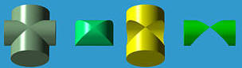
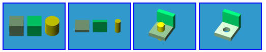
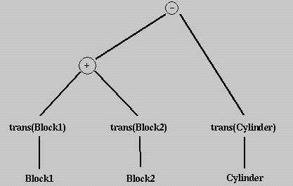

Constrcutive Solid Geometry，中文翻译为构造立体几何法，简称为 CSG。是与 B-rep 不同的另一种几何实体模型表示方法。本篇内容主要介绍与之相关联的一些基础概念。不涉及详细的构造算法。
将一些 基础实体（primitive solids） 通过 布尔运算（union，intersection，differrence） 组合成一个复杂的实体的过程，就是 CSG 造体过程。
标准的 CSG Primitives 共 6 种：立方体（cube），三棱柱（triangular prism），球体（sphere），圆柱体（cylinder），圆锥体（cone）和圆环（torus）。将这 6 种基础实体变换（例如缩放，平移和旋转）到合适的位置，然后再做布尔运算即可得到复杂实体，这个过程就是 CSG。
CSG 的描述过程可以简记为一个 CSG 表达式：
translate(scale(Block, <2.5, 1.5, 1.5>), <3, 2, 3>)
上面的 CSG 公式表示将 Block 的 x，y，z 分量分别缩放 2.5，1.5，1.5 倍后，然后将 Block 的位置的 x,y,z 坐标分别加 3,2,3 以实现平移。
一般操作用如下符号表示：
给定两个点集合 A 和 B，A 和 B 之间的布尔操作包括：
A ∪ B。A - B。A ∩ B。下图中，A 是竖直的圆柱体，B 是水平的圆柱体，从左至右依次为：A ∪ B，A ∩ B，A - B, B - A。

因此，实体可以被视为将布尔运算符应用于一组基础实体的结果。
让我们看一个简单的例子。我们想要设计一个类似括号的形状，带有一个孔，如下图最右图所示。我们从两个块实例和一个圆柱体实例（最左边的图）开始。然后，缩放两个块并将其中一个旋转到垂直位置。圆柱体也进行了缩放，使其半径与孔的半径相匹配。然后，这三个实例被转换到它们想要的位置。通过计算两个块的并集，然后从中减去圆柱体，获得最终的产品。

上述布尔过程并不是唯一的。例如，L 形状可以通过将一个立方体减去另一个立方体来构造。
上述的布尔过程可以用一个 CSG 表达式表示：
diff(union(trans(Block1), trans(Block2)), trans(Cylinder))
也可以转换为一棵 CSG 树：

每种 CSG 构造过程都可以用 CSG 表达式表示，也可以用 CSG 表达式树表示。
（完）